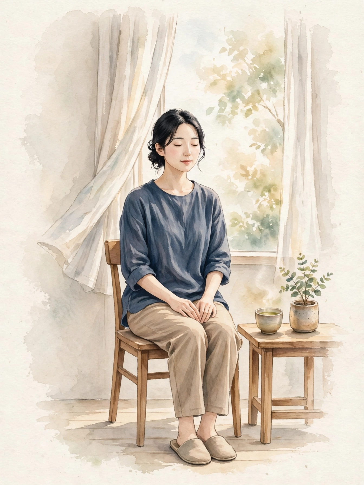

季節の養生 ― 梅雨明けの暑さと身体のリズム、タントラのまなざし
梅雨が明けると、曇り空と湿気に包まれていた日々から一転して、強い日ざしと蒸し暑さの日が増えていきます。身体はまだ暑さに慣れていない時期でもあり、急な暑さに身体の重さやだるさを感じたり、夜の寝苦しさを覚えたりする方もいます。東洋医学の季節の養生観では、梅雨明けは湿気の季節から暑さの季節へ移る境目とされ、身体のリズムをゆっくりと切り替える時期とされます。タントラのまなざしでは、季節の変わり目の身体の感じ方を、自分のリズムを確かめる機会として眺めます。この記事では、梅雨明けの暑さで感じやすい身体の変化と要因の整理、セルフケアと呼吸・気功の実践、経絡・ツボの実用、受診の目安をご紹介します。

梅雨明けとは ― 湿気の季節から暑さの季節への境目
梅雨明けとは、梅雨の時期が終わり、晴れの日が増えて本格的な暑さの季節へ移っていく変わり目を指す言葉として使われることが多いです。梅雨のあいだは曇りや雨の日が多く、空気中の湿気が高い状態が続きます。梅雨が明けると、日ざしが強くなり、気温が上がるとともに、蒸し暑さを感じやすくなります。季節の変わり目は、身体が気温や湿度の変化に応答している時期でもあり、普段と少し違う感じ方を覚える方もいます。
東洋医学の季節の養生観では、一年の巡りのなかで、季節の境目は身体のリズムが切り替わる時期とされます。梅雨の湿気の時期には身体の巡りが滞りやすいとされ、梅雨明けの暑さの時期には、身体の熱がこもりやすいとされます。タントラのまなざしでは、こうした季節の移ろいを、身体の声に耳を澄ませる機会として眺めます。
梅雨明けの暑さで感じやすい身体の変化
梅雨明けの暑さのなかで感じやすい身体の変化には、身体が重く感じる、だるさを感じる、頭がすっきりしない感じがする、食欲が落ちた感じがする、夜に寝苦しさを感じる、といったものが挙げられることがあります。感じ方には個人差があり、同じ日でも人によって感じ方が異なることもあります。急な暑さの日に重さを感じる方もいれば、蒸し暑い夜に寝苦しさを感じる方もいます。梅雨の湿気の日の身体の感じ方については、コラム「季節の養生 ― 梅雨の湿気と身体のリズム、タントラのまなざし」でも紹介しています。
梅雨明けの暑さで身体の重さやだるさを感じやすくなる背景は、ひとつとは限らず、いくつかの要因が重なっていることが考えられます。特定の原因を断定するものではありません。まず、急な気温の上昇が挙げられます。梅雨のあいだの涼しい日から一転して気温が上がると、身体が暑さに慣れていないため、重さやだるさを感じやすくなることがあります。次に、高い湿度が挙げられます。梅雨明けの時期は気温が上がっても湿度が高い日が多く、汗が乾きにくく、身体の熱がこもりやすく感じられることがあります。睡眠の質も関わります。蒸し暑い夜は寝苦しく、朝起きたときに身体の重さを感じやすくなることもあります。
セルフケアの取り入れ方 ― 暑さのなかの小さな工夫
梅雨明けの暑さのなかで取り入れやすい、日常の小さな工夫をご紹介します。どれも、無理のない範囲で試してみてください。まず、水分のとり方です。のどが渇く前に、少しずつ水分をとる習慣を入れてみてください。冷たい飲み物ばかりではなく、温かいお茶をゆっくり飲む時間も入れてみてください。次に、衣服の工夫です。通気性のよい衣服を選び、汗をかいたら着替える時間を入れてみてください。室内では、冷房の風が直接身体に当たらないようにしてみてください。
食欲が落ちた感じがするときは、無理にたくさん食べようとせず、食べやすいものを少しずつとる工夫をしてみてください。夜の過ごし方も整えてみてください。寝る1時間前から画面を見る時間を短くし、目を休ませる時間にしてみてください。寝室の暑さや湿気が気になるときは、換気を短い時間で区切り、扇風機や除湿機を使う工夫も役立ちます。寝る前にぬるめのお湯にゆっくりつかって肩まで温めると、身体が温まり、眠りに入りやすくなることもあります。
呼吸と気功体操 ― 暑さの日の数分
梅雨明けの暑さの日に取り入れやすい、数分の呼吸と気功体操の実践をご紹介します。梅雨の湿気の日の呼吸法の実践については、コラム「呼吸法の実践 ― 梅雨の湿気の日の数分、タントラのまなざし」でも紹介しています。暑さの日の呼吸は、朝の涼しい時間や、昼下がりのひと休みの時間、夜の寝る前の時間にも取り入れることができます。
- 姿勢を整える。椅子や床に座り、背すじをそっと伸ばします。肩の力を抜き、両手を膝の上に置きます。暑さの日に身体が重く感じられるときは、まず座る姿勢を整えるところから始めてみてください。
- 鼻からそっと吸い、口からゆっくりと吐く。吸う息と吐く息を同じくらいの長さで数え、吐く息を少し長めにしてみます。暑さで息が浅くなっていると感じるときは、無理に深く吸おうとせず、楽に吸える範囲で行います。
- 数呼吸だけ続ける。はじめは三呼吸ほどで十分です。慣れてきたら、五呼吸、十呼吸と少しずつ伸ばしてみてください。数分の呼吸の時間を、昼下がりのひと休みの時間に重ねてみるのもおすすめです。
- 目を閉じて、身体の感じ方を眺める。呼吸のあとは、目を閉じたまましばらく静かに過ごします。身体のどこに力が入っているか、どこがゆるんでいるかを、判断せずに眺めてみてください。
呼吸のあとに、気功体操の小さな動きを重ねてみるのもおすすめです。肩をゆっくり回したり、両腕をゆっくり上げ下げしたり、首をゆっくり動かしたり、その場でゆっくり足踏みしたりする動きを、呼吸に合わせて行ってみてください。痛みや引っかかりを感じるときは無理をしないでください。タントラのまなざしでは、呼吸を、身体と心をつなぐ細い糸のように眺めます。暑さの日の数分の呼吸は、季節の巡りのなかで自分のリズムを確かめる、小さな習慣にもなります。
経絡・ツボの実用 ― 暑さの季節に知っておきたい場所
東洋医学の考え方では、身体には経絡と呼ばれる巡りの道すじがあり、その上にツボがあると伝えられています。暑さの季節に、伝統的に知られてきたツボの場所の見つけ方と、押し方の目安をご紹介します。ツボを押すときは、気持ちよいと感じる程度の力加減で、数秒から十秒ほどを目安に、息を吐きながらそっと押してみてください。
まず、合谷です。親指と人さし指のあいだ、水かきのふくらみのあたりにあります。暑さの日に頭の重さを感じるときに、伝統的に知られてきた場所です。次に、足三里です。膝の外側のくぼみから指四本分ほど下がった、すねの外側にあります。足の重さやだるさを感じるときに、伝統的に知られてきた場所です。三陰交は、内くるぶしから指四本分ほど上の、すねの内側にあります。足元の重さを感じるときに、伝統的に知られてきた場所です。
気になるときの目安と、専門家への相談
梅雨明けの暑さのなかでの過ごし方を整えても、身体の重さやだるさ、頭のすっきりしなさが長く続く場合や、日常生活に支障がある場合は、医療機関への相談をご検討ください。めまいや吐き気を感じる、頭の痛みが強い、見え方の変化がある、足の片側だけが急に腫れたり痛んだりする、といったときは、自己判断で様子を見るのではなく、かかりつけ医や医療機関に相談することが大切です。気になる変化を書き留めておくと、受診のときに役立ちます。
サロンでの過ごし方
YinYang-Harmonyは、大阪市北区堂山町12-5 ロイヤルハイツ梅田Ⅱ 303号室（レンタルサロンACE梅田内）にある、タントラマッサージ・ヒーリングサロンです。営業時間は10:00〜20:00（完全予約制／不定休）で、90分15,000円／120分20,000円／150分25,000円のコースをご用意しています。季節の巡りのなかで、身体と向き合う静かな時間をお探しの方は、トップページのご予約の案内からお気軽にお問い合わせください。